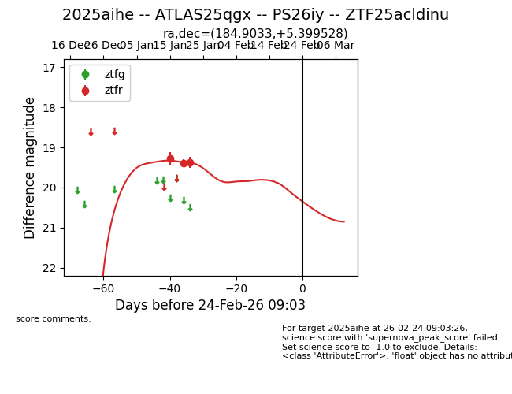
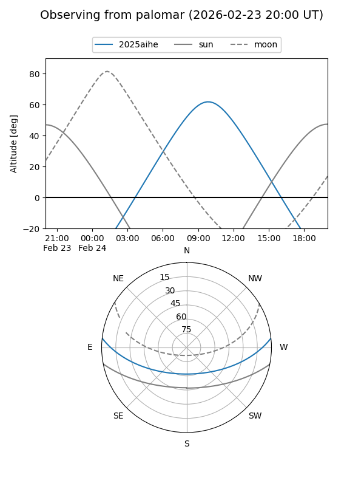
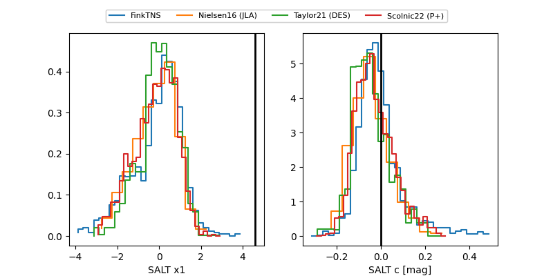

2025aihe
Target 2025aihe at 2026-01-21 21:01
Aliases and brokers:
FINK: link
Lasair: link
ALeRCE: link
TNS: link
YSE: link
alt names
ZTF25acldinu (ztf,fink_ztf)
2025aihe (tns,yse)
ATLAS25qgx (atlas)
PS26iy (panstarrs)
Coordinates:
equatorial (ra, dec) = 184.9033,+5.39953
equatorial (HMS+DMS) = 12:19:36.80,+05:23:58.30
galactic (l, b) = (282.2922,+66.98732)
Flags:
Photometry:
last ztfr=19.37
3 ztfr detections
Lightcurve

Visibility


Additional plots
